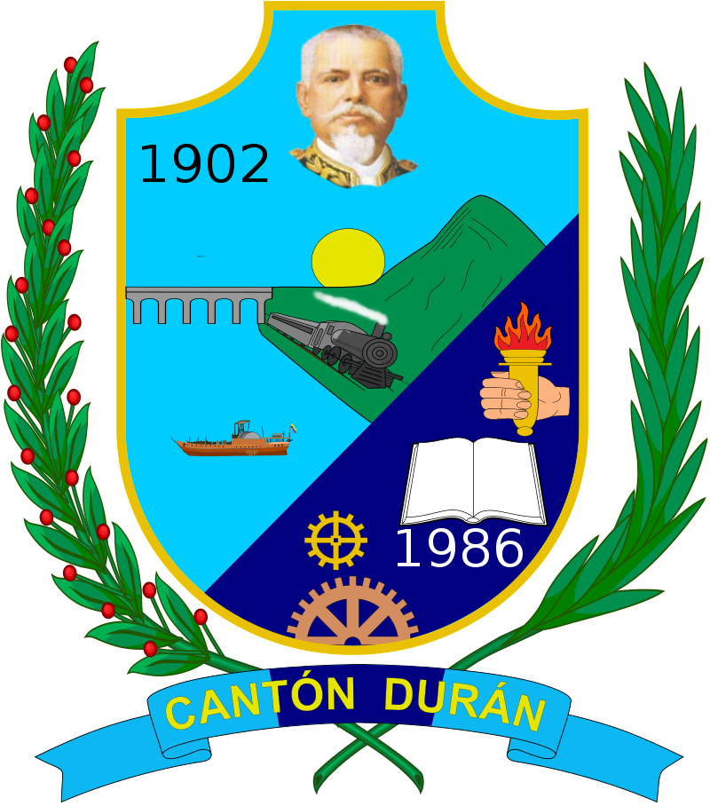

Cantón Durán
En el presente forma parte de la aglomeración urbana de Guayaquil más allá de la conurbación urbana que podría denotar, pues su actividad económica, social y comercial está fuertemente ligada a Guayaquil, siendo ciudad dormitorio para miles de trabajadores que cruzan a Guayaquil por vía terrestre.
Es considerada parte de la Conurbación de Guayaquil la cual es la segunda ciudad más poblada de la conurbación y es también parte de la Zona de Planificación #8 junto con el cantón de Guayaquil y de Samborondón, ambas conectadas por el puente de la unidad nacional.

Toponimia
El Sr. José Durán Maristany, de origen español (El Masnou- Barcelona) se estableció en Durán y construyó una piladora y el hotel Durán, las personas se acostumbraron a decir vamos a Durán. Esto cuando Durán era aún un caserío y existía únicamente por el ferrocarril. José Durán donó las tierras por donde cruzaría el ferrocarril en la época del entonces presidente Eloy Alfaro, por tal motivo y como homenaje al presidente y al terrateniente se le puso Eloy Alfaro-Durán.
.png)
Geografía
La zona donde se asienta el sector es en general plana, con varias elevaciones, entre ellas: "Peñón del Río" con aprox. 120 m.s.n.m., y del Cerro "Las Cabras" con altura m.s.n.m. 88 . (Según Luis M. Sánchez Gaete, periodista e investigador del cantón)) que suele experimentar deslaves, lo que pone en peligro a sus habitantes. El perímetro urbano fue originalmente irregular, con varios cerros, riachuelos y lagunas que aún se presentan como restos de una ecología en disolución. Existen aproximadamente 2 canteras de piedra caliza para la construcción en la zona sur y noreste del centro de la ciudad, que previamente fueron cerros de una cadena montañosa que se conectaba hasta las orillas del río Daule, donde se une con el Babahoyo, a la altura de sector de "La Puntilla" que pertenece al cantón Samborondón que separa a los cantones: Durán y Guayaquil.

Gobierno y política
Territorialmente, Durán está organizada en tres parroquias urbanas. El término "parroquia" es usado en el Ecuador para referirse a territorios dentro de la división administrativa municipal.
La ciudad y el cantón Durán, al igual que las demás localidades ecuatorianas, se rige por una municipalidad según lo previsto en la Constitución de la República. El Gobierno Autónomo Descentralizado Municipal de Durán, es una entidad de gobierno seccional que administra el cantón de forma autónoma al gobierno central. La municipalidad está organizada por la separación de poderes de carácter ejecutivo representado por el alcalde, y otro de carácter legislativo conformado por los miembros del concejo cantonal.
La Municipalidad de Durán, se rige principalmente sobre la base de lo estipulado en los artículos 253 y 264 de la Constitución Política de la República y en la Ley de Régimen Municipal en sus artículos 1 y 16, que establece la autonomía funcional, económica y administrativa de la Entidad.
.jpeg)
Alcaldía
El poder ejecutivo de la ciudad es desempeñado por un ciudadano con título de Alcalde del Cantón Durán, el cual es elegido por sufragio directo en una sola vuelta electoral sin fórmulas o binomios en las elecciones municipales. El vicealcalde no es elegido de la misma manera, ya que una vez instalado el Concejo Cantonal se elegirá entre los ediles un encargado para aquel cargo. El alcalde y el vicealcalde duran cuatro años en sus funciones, y en el caso del alcalde, tiene la opción de reelección inmediata o sucesiva. El alcalde es el máximo representante de la municipalidad y tiene voto dirimente en el concejo cantonal, mientras que el vicealcalde realiza las funciones del alcalde de modo suplente mientras no pueda ejercer sus funciones el alcalde titular.
El alcalde cuenta con su propio gabinete de administración municipal mediante múltiples direcciones de nivel de asesoría, de apoyo y operativo. Los encargados de aquellas direcciones municipales son designados por el propio alcalde. Actualmente el alcalde de Durán es Dalton Narvaéz, elegido para el periodo 2019 - 2023.
Concejo cantonal
El poder legislativo de la ciudad es ejercido por el Concejo Cantonal de Durán el cual es un pequeño parlamento unicameral que se constituye al igual que en los demás cantones mediante la disposición del artículo 253 de la Constitución Política Nacional. De acuerdo a lo establecido en la ley, la cantidad de miembros del concejo representa proporcionalmente a la población del cantón.4
Durán posee 11 concejales, los cuales son elegidos mediante sufragio (Sistema D'Hondt) y duran en sus funciones cuatro años pudiendo ser reelegidos indefinidamente. De los once ediles, seis representan a la "circunscripción 1" mientras que cinco representan a la "circunscripción 2". El alcalde y el vicealcalde presiden el concejo en sus sesiones. Al recién instalarse el concejo cantonal por primera vez los miembros eligen de entre ellos un designado para el cargo de vicealcalde de la ciudad.
.jpeg)